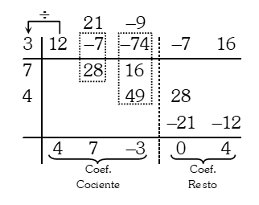

EJEMPLO APLICATIVO
El método de Horner es un método creado por William George Horner que nos permite dividir dos polinomios, para ver los detalles de este método resolveremos un ejercicio de manera detallada.
Dividir:
Resolución:
Para dividir los polinomios por el método de Horner los polinomios, tanto el dividendo como el divisor deben estar ordenados en forma decreciente, con respecto al exponente de la variable.
Entonces ordenando el dividendo y el divisor obtendremos:
Enseguida colocamos los coeficientes del dividendo y el divisor en el siguiente sistema gráfico, compuesto por dos líneas horizontales y dos verticales:
Colocando los coeficientes, el esquema queda así:
Una vez ubicado los coeficientes del dividendo y del divisor en el esquema, se traza la 2da línea vertical que separa a los coeficientes del cociente y del residuo y se procede a dividir así:
Se divide el 1er coeficiente del dividendo entre el 1er coeficiente del divisor: 12 ÷ 3 = 4; este resultado se coloca en la primera columna y debajo de la segunda línea horizontal, luego se multiplica por los coeficientes del divisor que han sido cambiados de signo: 4 x 7 = 28; 4 x 4 = 16; ambos resultados se colocan en la 2da y 3ra columna, respectivamente y en una fila. Luego la suma de la segunda columna (28 + − 7 = 21); se vuelve a dividir entre el primer coeficiente del divisor (21 ÷ 3 = 7), resultado que se coloca en la 2da columna y debajo de la 2da línea horizontal para luego multiplicarse por los coeficientes del divisor que han sido cambiados de signo, estos productos: 49 y 28 en la 3ra y 4ta columna y debajo de la primera fila en que se colocaron los anteriores productos, con la suma de la tercera columna se procede en forma análoga que la anterior, pero las cantidades de las columnas que están a la derecha de la 2da línea vertical se suman y ya no se dividen entre el primer coeficiente del divisor, simplemente se colocan en el espacio destinado a los coeficientes del residuo.
Agregamos variables a los coeficientes y obtenemos:

Cociente:
Residuo: